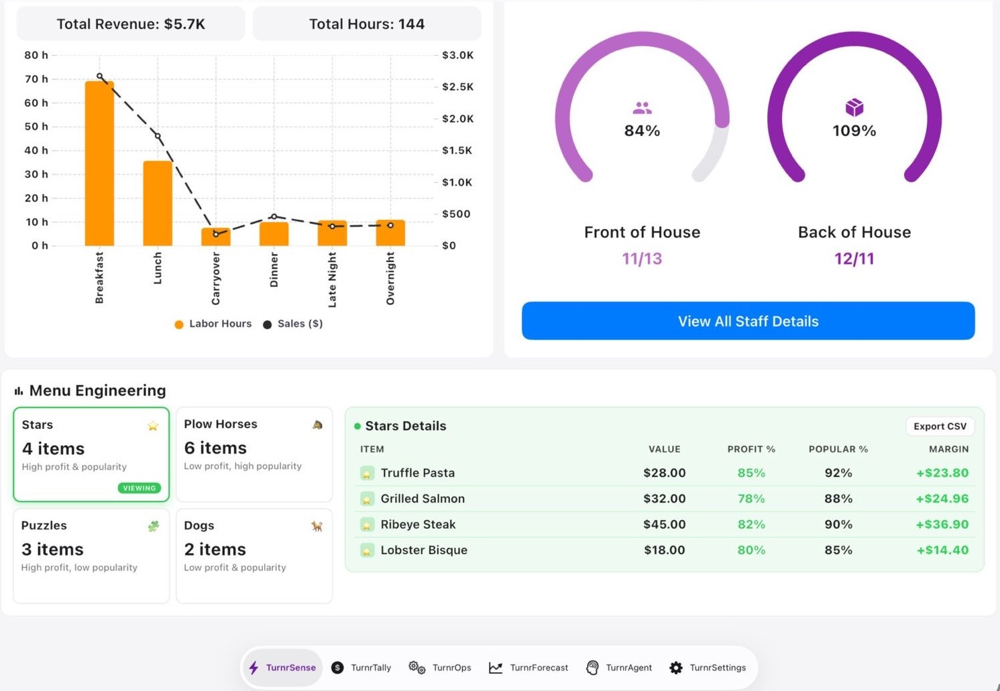

The menu matrix is powerful because it combines two truths: what guests choose and what each item contributes to profit. Most teams track one side and ignore the other, which causes slow but steady margin erosion.
Puzzles
High Margin
Low Popularity
Stars
High Margin
High Popularity
Dogs
Low Margin
Low Popularity
Plow Horses
Low Margin
High Popularity
How to act on each quadrant
- Stars: keep quality high and feature visibly.
- Plow Horses: optimize prep and consider small price changes.
- Puzzles: improve naming, placement, and server prompts.
- Dogs: simplify, bundle, or remove.
Do not run this once per quarter and forget it. Run it monthly and include labor and prep complexity in your decisions. Some “high margin” items are operationally expensive during rush periods.
The best operators pair menu engineering with daypart demand and staffing constraints. That is where real gains appear.
Case study: from 8% to 14% margins
In one franchise location, margin swings were not explained fast enough to fix them. The shift was a weekly scorecard of margin drivers—labor utilization, waste, discount leakage, and mix—with every variance assigned an owner and date. Overtime hotspots, low-margin items during peak labor windows, and purchase timing aligned to forecast (not habit) moved margin from roughly 8% to 14% in six months with better service consistency. Menu engineering plus disciplined operating cadence compounds.
Menu mix snapshot
Stars sustain margin, Puzzles need promotion, and Dogs need action.

Operator playbook
- Reclassify menu items monthly using actual contribution margin and popularity.
- Pair menu actions with prep complexity and labor window constraints.
- Track impact of each menu change for at least two full cycles.
Where teams slip
Teams often optimize only item margin and ignore execution cost. Durable gains appear when menu and operations are optimized together.
Keep Reading
- How to Cut Labor Costs Without Cutting Staff
- Forecasting & Daily Operating Control
- Restaurant Management Tips: The Complete Operator's Guide
Track mix, margin, and menu performance in real time